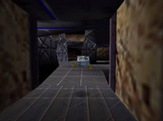
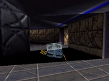
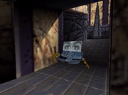

|
.
| Perfect
Dark : Simulants
Dr Caroll |
800AC548 003E
800AC594 003E
800AC5E0 003E
800AC62C 003E
800AC678 003E
800AC6C4 003E
800AC710 003E
800AC75C 003E
Ci-dessous, en Battle, tous les Simulants seront des Dr Caroll ! Ils n'utilisent pas les Armes, mais frappent comme si ils avaient des Poings ! Ils seront donc chiant à tout le temps vous désarmer. De plus, ils sont durs à toucher, et ont tout le temps un Shield. Lorsqu'ils se prennent des Balles, ils parlent comme dans les Missions Solo et vous demandent d'arreter ! Génial ! Et fin du fin, lorsqu'ils meurent, c'est exactement comme dans les Missions en Solo ! |


